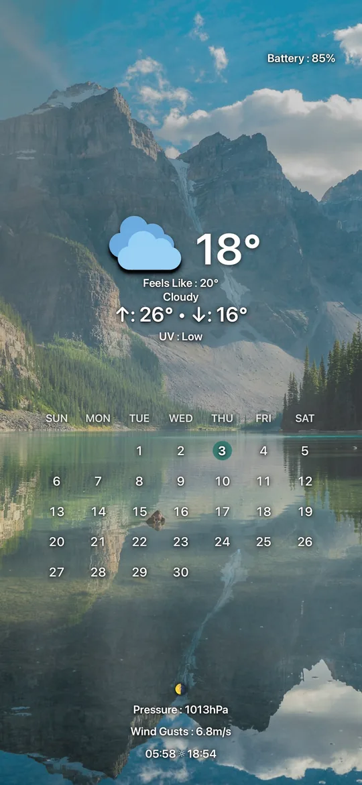
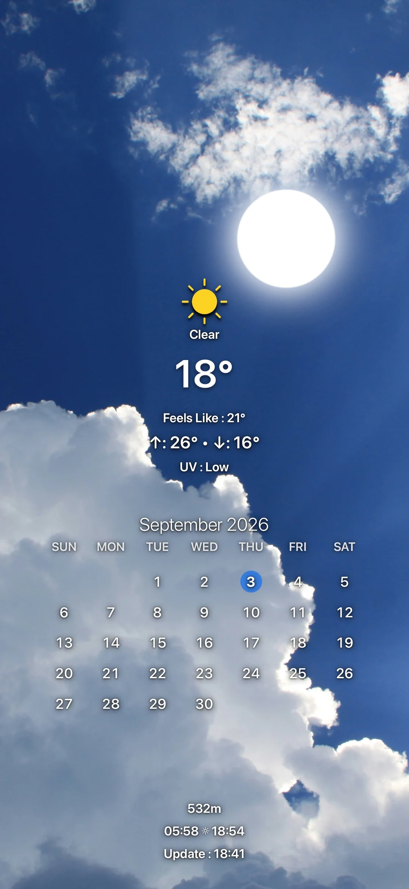
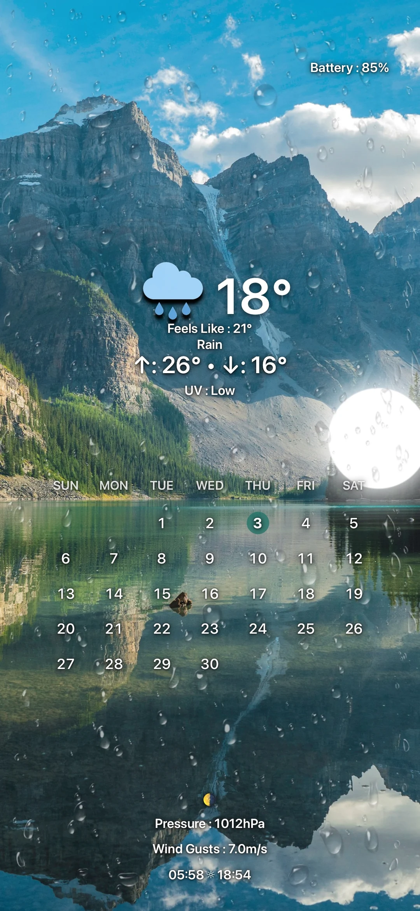
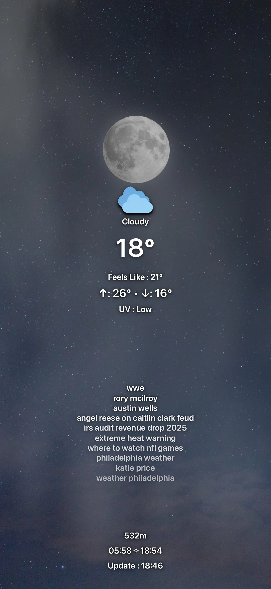
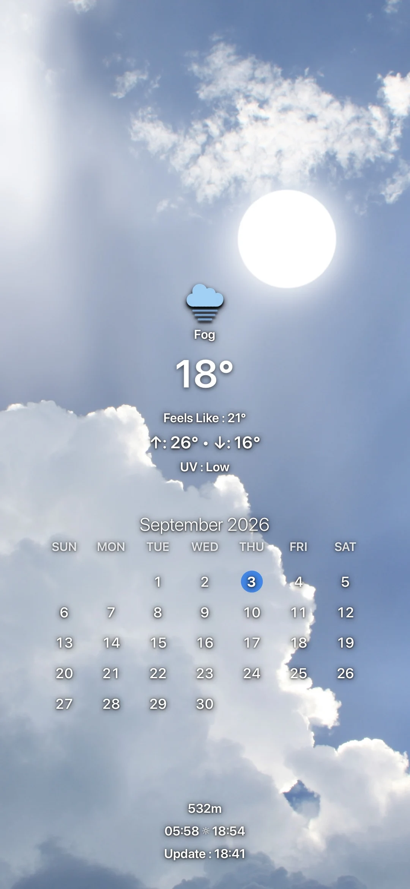
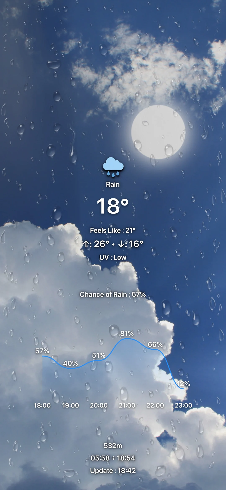
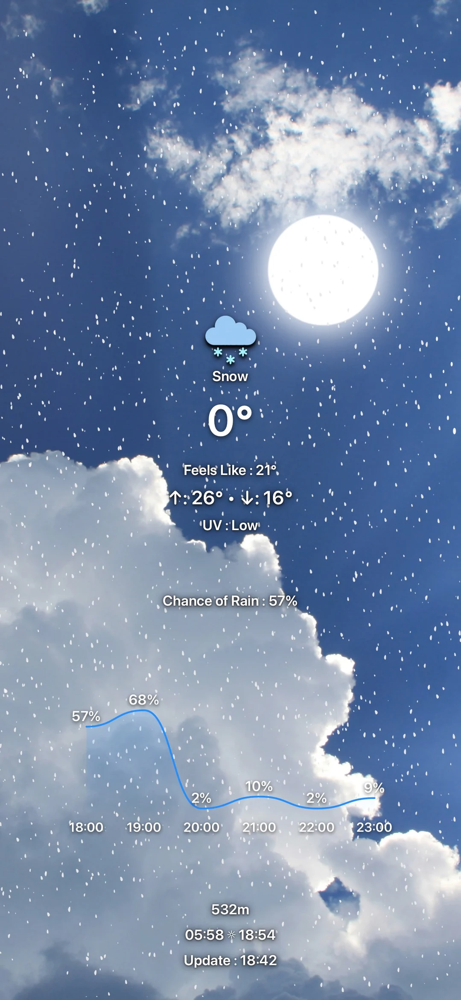

Start with a photograph.
A place, a memory, a sky you love. Choose your image and frame it for your iPhone.
Your photos. Today's weather.
A little more life on your
screen.




Your favorite photograph is just the beginning.
Sunlight, a passing shower, a softer sky. ODODOCK layers the current weather over your photograph, so the view changes with the world outside.



Save a different photo and layout for day and night. Sunrise and sunset set the rhythm, while the sun and moon follow their own arc across your screen.
Temperature, feels like, UV, rain graphs, a four-day forecast, moon phase and battery. Add Trends, a mini map or a memo. Keep the details that belong in your day.
Tap to edit. Long-press to move. Resize, align and style each item around your photograph. A foreground depth layer lets the sun or moon sit naturally behind a mountain, a tree or a building.
When fresh weather cannot be reached, ODODOCK keeps the last successful composition available for your next render.
A place, a memory, a sky you love. Choose your image and frame it for your iPhone.
Choose the details, set their style, and arrange your day and night layouts.
Run the ODODOCK shortcut to render your saved setup and apply it as your wallpaper.
Your photographs stay yours.